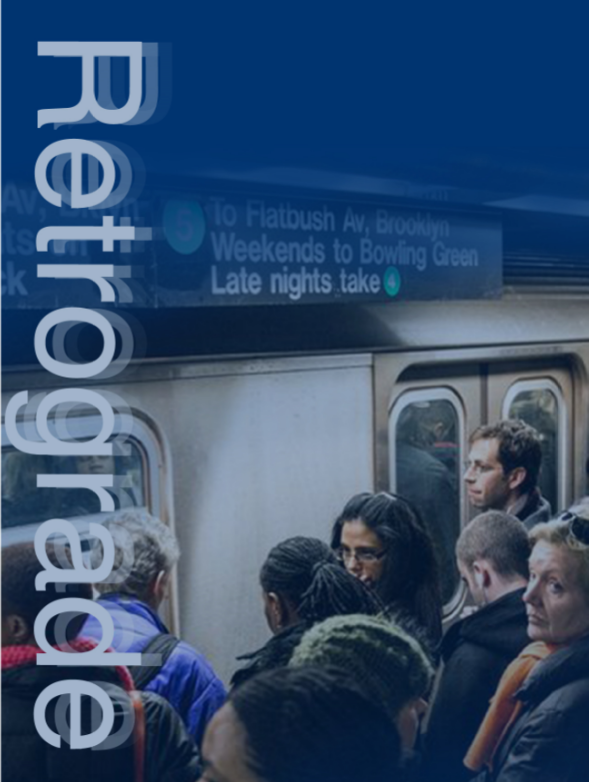

.jpg)
|
|
This project here is one of my most recnet ones that I have done. The task was to take a magazine cover that had laready been created and design a new one using the same words and images. My idea here was to try and give the magazine more of gym and workout feel, without losing the already-intense vibe it had. |
| The project here on the right is another recent of mines. This was more a persoanl project for me, so I was just putting together an idea that i had in my mind. I wanted to show what I feel NYC is through the view of an MTA subway car. Whether you take the subway or not, I feel as New Yorkers we all experience some of these things on a daily basis. |

|

|
This is a project that I completed way back that tasked me to use a celebrity and make him/her the face of a new and upcoming exhibit. I used a little bit more of my imagination here and wanted explore different styles with this particular project. |
| A previous client that I worked with had told me that he was working on a book and needed a logo for his fictional school in the story. He gave me some ideas on how he wanted it to look and I just brainstormed on from there. |

|
|  | My task with this one on left was to create to a poster for a campaign to make subway issues better. It focused mostly on train delays and and the consequences that usually follow after.I chose "Retrograde" becasue it feels like the MTA is going backwards instead of improving and moving forward. |
| My job here was to create and brand standards guide for a logo that i had created for a client. The brand was for a jewelery store. The guide included the logo history, uses and misues, color choices. etc. |
.jpg)
|